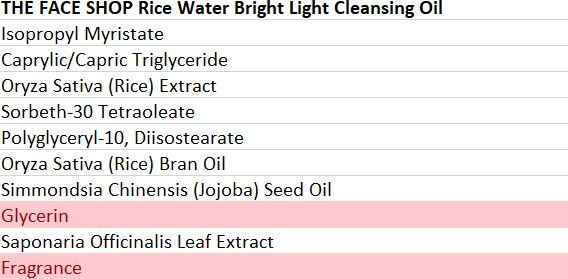
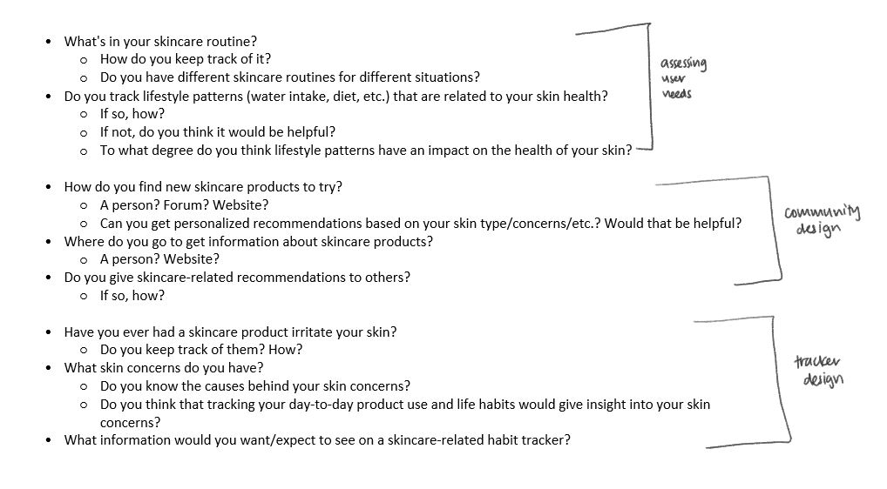
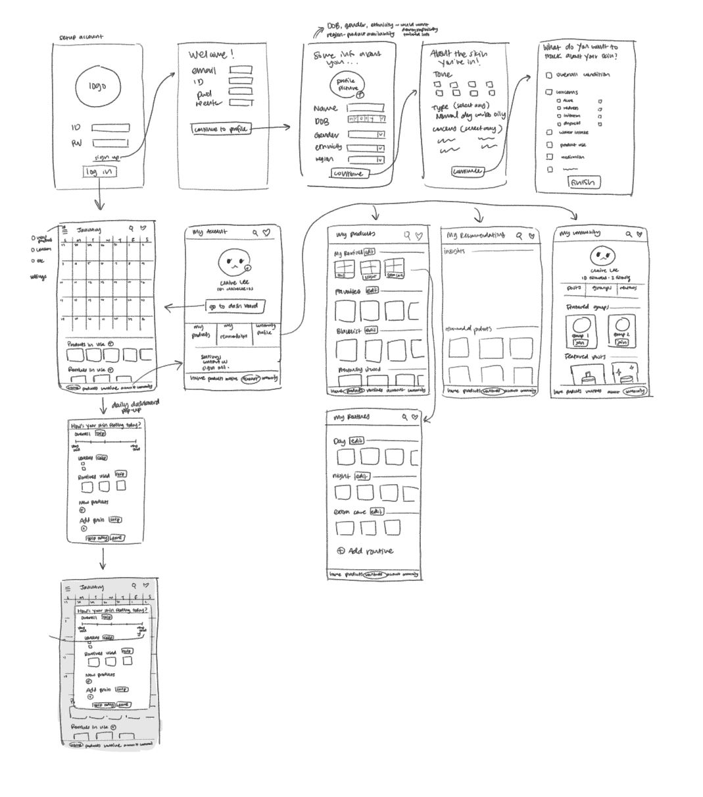
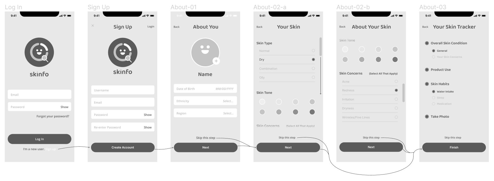

Skinfo
Bridging the information gap between skincare retailers and consumers by generating data-driven skincare insights on the individual and community level
Introduction
Skinfo is a skincare-oriented habit tracking and information sharing platform that aims to help users make informed decisions about their skincare habits and purchases.
Especially since the COVID-19 pandemic, interest in skincare has been on the rise. The problem is, skincare is highly individualized and multifaceted, and there is no one-product-fits-all.
There are ways to address this issue, like personalized prescription skincare via online consultation. But those solutions are often difficult. And expensive.
Skinfo takes a consistent, long-term data collection approach to generate the personalized information that skincare users want to know.
Skinfo is useful from a business perspective, too. Consumers are walking gold mines of information that could be used to advertise or iterate on a product.
Information like reviews, pictures, and recommendations is an important part of a product's appeal to consumers - that's why we see companies running paid review promotions or pouring millions of dollars into influencer marketing.
However, it's extremely difficult to get consumers to provide this data. But what if it wasn't?
This is an ongoing personal design project. I thought it would be interesting to create a skincare platform that would provide useful data for both consumers and businesses, since I've been on both sides.
QUESTION
How can I integrate individual data tracking tools with online community structures to give users personalized, community-backed skincare information?
Ideation
I'm a big skincare user, so I end up talking about it with a lot of my friends at some point. I realized that for myself and many others, a common (but difficult to track) source of skincare problems was lifestyle and environment. Trying new products was also a bit of a hassle for a lot of people. Personally, I use a habit tracker in my bullet journal to help keep track of some of these lifestyle patterns, but it's a lot of work. I also haven't met anyone else who does this.

One of my other sources of inspiration was my skincare.xlsx sheet, where I log all of the products that have irritated my skin and
use the magic of conditional highlighting to identify ingredients to avoid.
As you can imagine, this is also inconvenient - especially for people who aren't familiar with Excel or similar softwares.
Basically, I saw that skincare is difficult and requires a lot of time and monetary investment that a lot of people just don't have room for. I wanted to try and make it a little easier.
Preliminary User Testing
I started out with user interviews aimed at determining the need for a platform like Skinfo, as well as the kinds of information that users want or expect to see.
I separated the interview questions out into three different sections that would inform different parts of the app design: users' skincare information needs, tracker design, and community design.
I wanted information on what users were doing to keep track of their skincare routines, habits, and how they found new products to try.
Did they need this extra skincare help?

Interview script and main findings
INSIGHTS FROM PRELIMINARY USER INTERVIEWS
1. Skincare users prioritize information from "real" people when looking for new products.
All of my interviewees indicated that they buy products that were verified and recommended by real people, like friends, Youtubers/TikTokers, or even just people in the product reviews section. 50% of them said that before-and-after pictures heavily influence their purchases. The information that Skinfo would generate has a real value proposition for retailers and consumers alike.
2. Users recognize that lifestyle influences skin health, but aren't sure how to track it.
The general consensus was that lifestyle has a recognizable impact on skin condition. When asked what habits would affect their skin, users answered: water intake, sleep, skincare product use, or diet. One user indicated that the general state of these habits (good/bad) was more important than the specifics. Only one user indicated that they tracked some of these habits at all, and it was for non-skincare reasons.
3. Many users have persistent skin concerns but don't know where to look for a solution.
Most of my interviewees named at least one long-term skin concern. Users often lacked the time and resources to address these issues, and one user said "it's not bad enough to see a dermatologist, so I can't do much about it." All of the users agreed that seeing personalized recommendations to resolve these issues would be helpful.
4. Users don't formally keep track of products or routines, relying mostly on recall.
The majority of my interviewees said they have a skincare routine, and that they have different routines for different situations (such as day/night). All the users who use a skincare routine had no particular device for keeping track of the proucts in their routine. Nobody had a routine with more than 7 products.Wireframing
I used the insights gained from our preliminary user testing to create my initial wireframe. I included components such as routine tracking (adding products into lists that represent your skincare routine), habit tracking, a main dashboard with recommendations,
and a community forum where users can share their experiences with products. I also included a photo option in the daily log, so users can easily see the before-and-after of changing up their skincare routine. My intention is to make an easy path to add these pictures to
product reviews as well.

Initial wireframe
User Testing on Wireframe/Paper Prototype
The second round of user testing was a simple walkthrough of the wireframe (pictured above). The goal was to identify and correct any major inconsistencies or unclear features before making a higher fidelity prototype.
One interesting piece of feedback I got from a test user was that the structure of the app dashboard is intuitive because it's fairly similar to mobile period trackers.
I hadn't thought to compare them at all, but it made a lot of sense. I'll be referencing mobile period trackers for the following iterations of the dashboard.
Other feedback from my test users brought me to some features to include in the following iteration - push notification reminders, more back buttons, and a clearer navigation bar.

low-fi login and account setup
This project is ongoing, but I'll be updating with any progress I make!